PPCWay runs Google search ads for small businesses like a plumber or an electrician. This page walks through every screen in the new design, says what a business owner sees, and explains in plain words what the system is doing underneath. It also says which parts the proof of concept has built.
Every screen opens with a sentence a person can read, such as "You spent $1,240 and got 58 calls." The number comes after the sentence, and the chart after the number. No Google Ads jargon unless you switch on the Advanced view.
By default PPCWay proposes a change, explains why, and waits. Nothing changes until the owner says yes. Anything left alone expires after seven days. Every change can be undone.
Only one part of the system is allowed to talk to Google Ads. Before any change goes through that door it is checked against the owner's limits: most spent in a day, most paid for a call, biggest change at once. If a limit says no, that is the product working, not a fault.
These are the pages an owner sees after setup. The left sidebar is the same on all of them: the business name, five pages, an Advanced view switch, and Help.
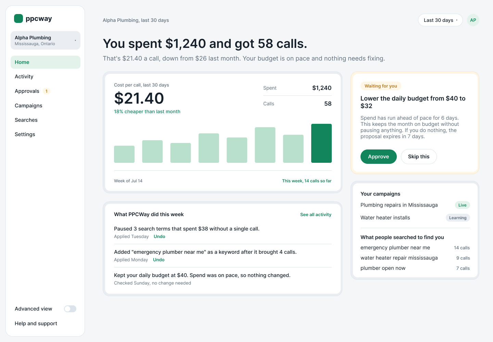
The first thing an owner sees. Answers "is my money working?" in one glance.
A sentence at the top: how much was spent and how many calls it brought. Under it, the cost of one call and whether that is better or worse than last month.
A bar chart of cost per call by week. A short list headed "What PPCWay did this week", each line a sentence with an Undo link. On the right, a yellow card if one change is waiting for a decision, and the list of campaigns with a status word: Live, Learning, Paused.
The architecture document calls this the "default view" of the dashboard Blueprint §10.1. It lists exactly these rows: spend, results, cost per result, the trend against last period, a plain-English activity feed, and campaign names in ordinary words.
The sentences in "What PPCWay did this week" are not written by the screen. They are stored with each change when it happens §8.4, so the website, the weekly email and the support team all read the same words.
The yellow card is a change held for approval §8.3. Undo asks the system to put the setting back and records that as its own entry.
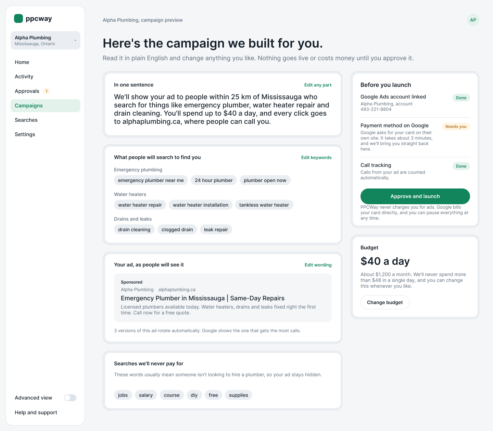
The ad campaign PPCWay wrote, explained before it goes live.
One sentence saying who will see the ad, where, for what searches, and how much a day. Then the search phrases grouped by topic, the ad exactly as it will appear on Google, and a list of searches the ad will never pay for, such as "jobs" or "salary".
On the right, a checklist before launch: Google account linked, payment method added, call counting working. Each says Done or Needs you. Below it the daily budget and a promise never to spend more than a stated ceiling in one day.
This is step 9 of the setup journey in the architecture document, the "plain-English preview" §4.4. Everything on the left was produced by the steps before it: reading the website, choosing search topics, writing ad wording and checking it against Google's rules, then assembling the campaign by fixed rules.
The checklist exists because of one hard fact: Google will not let any software enter a payment card §13.1. The owner must do that on Google's own site. So the campaign is made fully approvable while that is outstanding, and coming back is one click.
Call counting is on the list because without it PPCWay can only see clicks, not results §13.5. The ceiling under the budget is one of the hard spend limits every change is checked against §5.5.
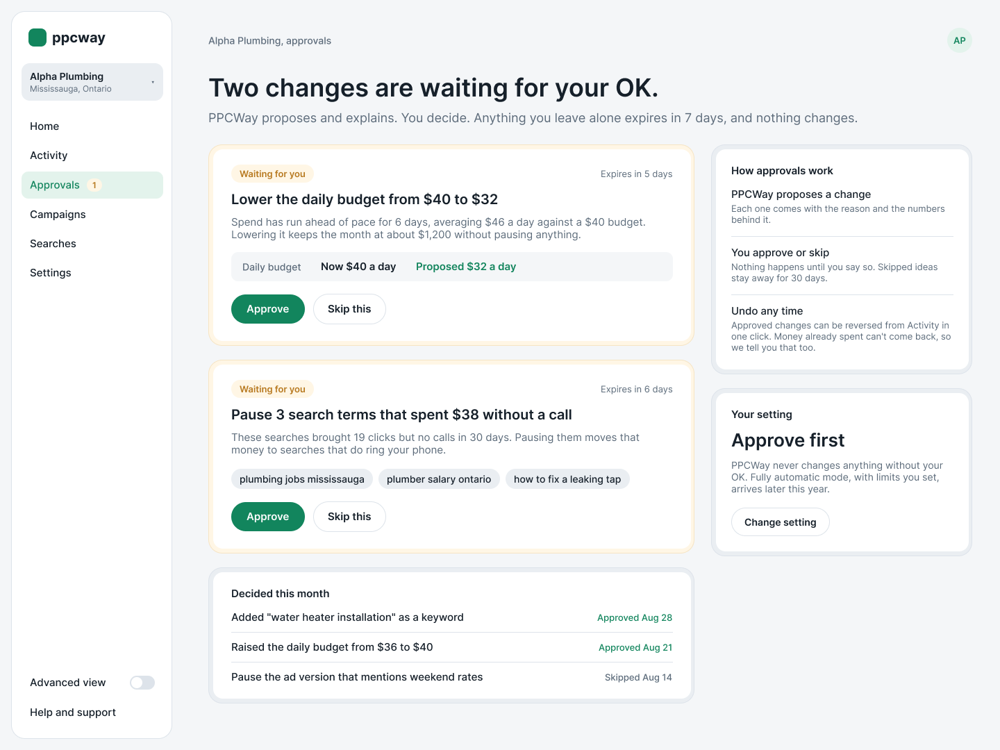
Changes PPCWay would like to make, waiting for a yes or a no.
A headline saying how many changes are waiting. Each one is a yellow card: what the change is, why, the value now and the value proposed, how many days before it expires, and two buttons, Approve and Skip this.
Below, the decisions already made this month. On the right, a short explanation of how approvals work and the owner's current setting, "Approve first".
PPCWay runs on a schedule, reads the numbers, and applies fixed rules that produce proposals §4.5. Each proposal then passes through the checks at the door to Google. Check number three is the owner's autonomy setting §5.5. With "Approve first" the proposal is held here instead of applied, and expires after seven days §8.3.
The "Now / Proposed" row is stored before anything happens, so the change can be reversed later §8.4. The document is careful about one thing the screen repeats: undo restores the setting, not the money already spent.
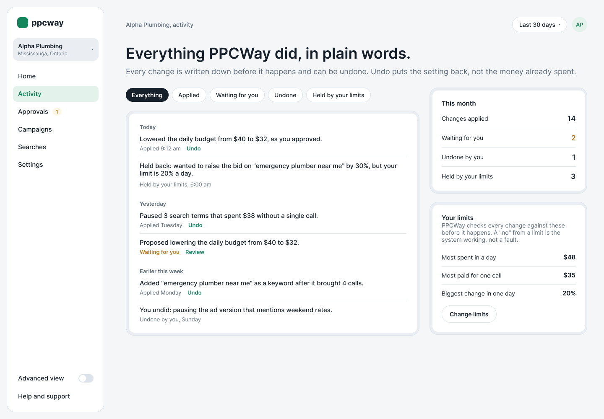
The full record of what PPCWay did, in plain words, with Undo on each line.
A list grouped by Today, Yesterday and Earlier this week. Each line is a sentence such as "Paused 3 search terms that spent $38 without a single call", with when it happened and an Undo link. Filters across the top: Everything, Applied, Waiting for you, Undone, Held by your limits.
On the right, counts for the month and the owner's limits: most spent in a day, most paid for one call, biggest change in one day.
The architecture document calls this record the "audit spine" of the whole product §8.4. Every change is written down before it is made, can never be edited afterwards, and carries enough detail to reverse it. That is why the subline says changes are "written down before they happen".
"Held by your limits" shows changes the door refused. The document's rule is to fail closed: if a limit cannot be checked, nothing is spent §4.1. So the screen calls a refusal "the system working, not a fault".
An undo is a change in its own right and gets its own line, "You undid…", rather than quietly disappearing from the list.
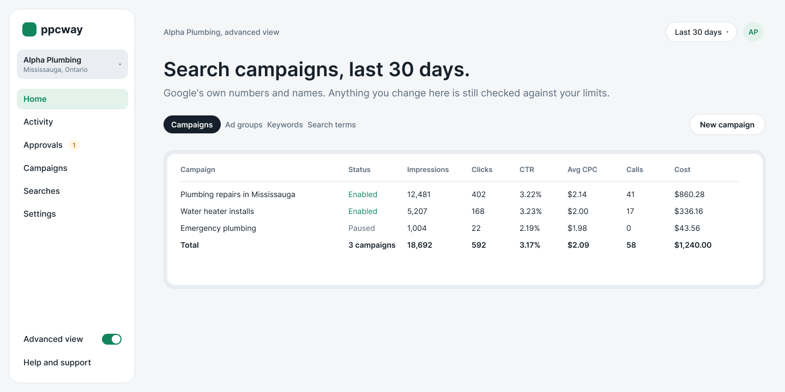
For owners who already know Google Ads. The same account in Google's own words and numbers.
Flip the switch at the foot of the sidebar and Home becomes a table: each campaign with impressions, clicks, click-through rate, average cost per click, calls and cost, plus a total row. Tabs for Campaigns, Ad groups, Keywords and Search terms.
The architecture document specifies two views of the same dashboard and this is the second column: Google entity names, raw metrics, per-campaign breakdowns §10.1. Google also requires any tool like PPCWay to be able to report at account, campaign, ad group and ad level §12.3, which is what the four tabs are for.
The subline, "anything you change here is still checked against your limits", is the one-door rule again. There is no back way into Google that skips the checks.
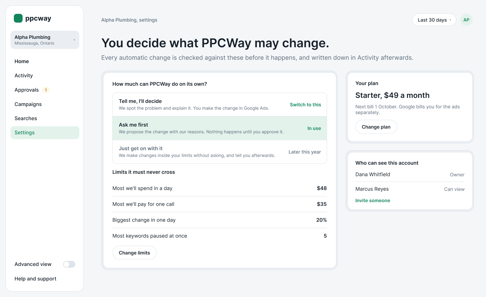
How much PPCWay may do on its own, and the lines it must never cross.
Three choices in plain words. "Tell me, I'll decide": PPCWay only points things out. "Ask me first": PPCWay proposes and waits for a yes. "Just get on with it": PPCWay makes changes inside the limits and tells you afterwards.
Under that, the limits: most spent in a day, most paid for one call, biggest change in one day, most keywords paused at once. On the right, the subscription plan and who else can see the account.
The three choices are the three autonomy levels in the architecture document §8.3. It insists the level is enforced at the door to Google, not by the screen, so no part of the system can act above what the owner chose. The third level needs a separate, recorded consent that names what may change, which is why the design showed it as "later this year".
The four limits are checks five to eight at the door §5.5. "Most keywords paused at once" is the "blast radius" check, there to stop a bad reading of the numbers from pausing everything.
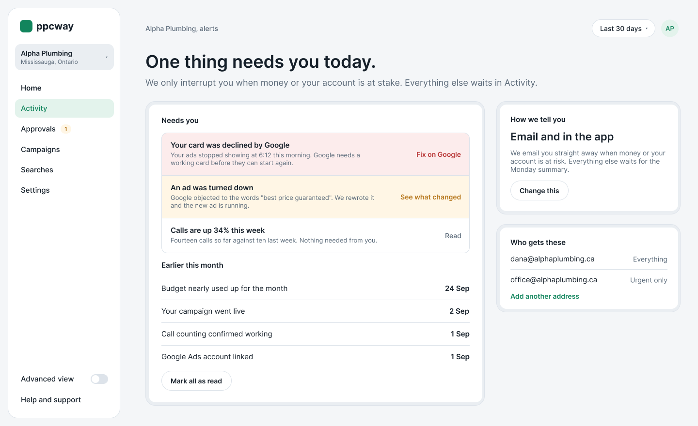
The few things that interrupt an owner: money and account problems.
A red row when Google declined the card, with "Fix on Google". A yellow row when Google turned an ad down, with "See what changed". A plain row for good news such as calls being up. Older alerts below, and on the right, which email addresses get which alerts.
The architecture document has a table of every event that notifies an owner and how serious it is §10.3. A declined card or a suspended account is "Critical" and cannot be switched off, because it concerns money and whether the account survives. Every alert must carry a next action, so "Fix on Google" is a rule, not a nicety.
Google does not push these events out. PPCWay has to poll for them a few times a day §5.7: ad disapprovals, suspensions, billing holds, and changes made in Google Ads by someone else.
Five steps from a new account to a live campaign. The architecture document aims for a median of under fifteen minutes and lists the thirteen things that have to happen along the way §4.4. The rail on the left of each step shows where you are.
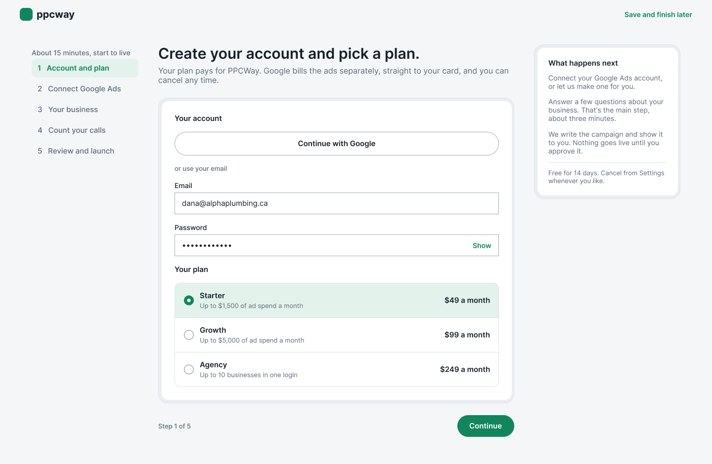
Create a PPCWay login and choose a monthly plan.
Sign in with Google or an email address, then pick Starter, Growth or Agency. The side note explains that the plan pays for PPCWay and that Google bills the ads separately.
Step 1 of the setup journey: sign-up and plan selection through Stripe, about 45 seconds §4.4.
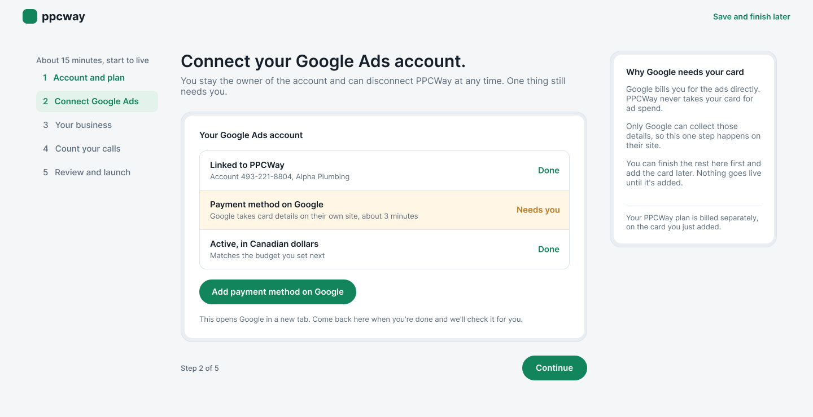
The handshake between PPCWay and Google. This is the step demonstrated live.
Three rows. "Linked to PPCWay" with the account number, Done. "Payment method on Google", Needs you, with a button that opens Google in a new tab. "Active, in Canadian dollars", Done. The side note explains why only Google may take the card.
Steps 2 and 3 of the journey §4.4. The owner signs in to Google once and agrees to let PPCWay manage ads. Google hands back a key that PPCWay stores encrypted. PPCWay then asks Google which ad accounts that person can use, lists them, and links the chosen one under PPCWay's manager account. From then on, only the one door service ever uses that key.
Billing is checked the moment the link is made, so the owner hears at minute one rather than minute twelve §13.1. "We'll check it for you" means PPCWay polls Google until the card is in place.
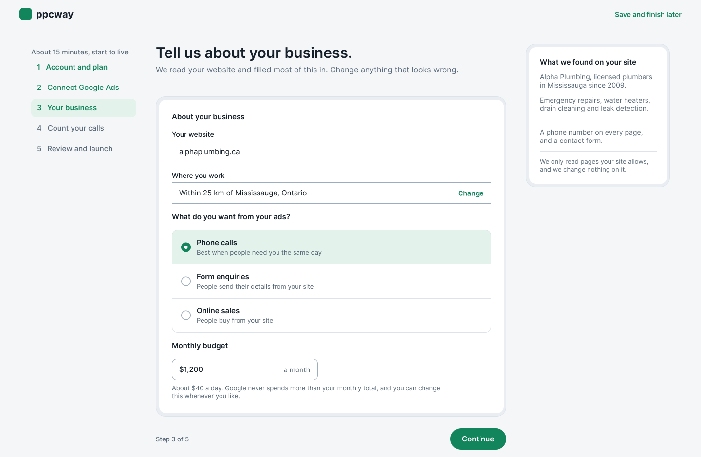
The one real form. Most of it is filled in already from the website.
Website, where you work as a radius around a town, what you want from your ads (phone calls, form enquiries or online sales), and a monthly budget with the daily amount worked out underneath. On the right, "What we found on your site" in three short lines.
Step 4, which the document calls "the main human step", three to five minutes §4.4. While the owner types, step 5 is already running: a crawler reads the website and summarises it, which is what the side panel shows.
The goal choice matters later. It decides how the campaign bids §6.5 and what "results" means on Home: calls, enquiries or sales.
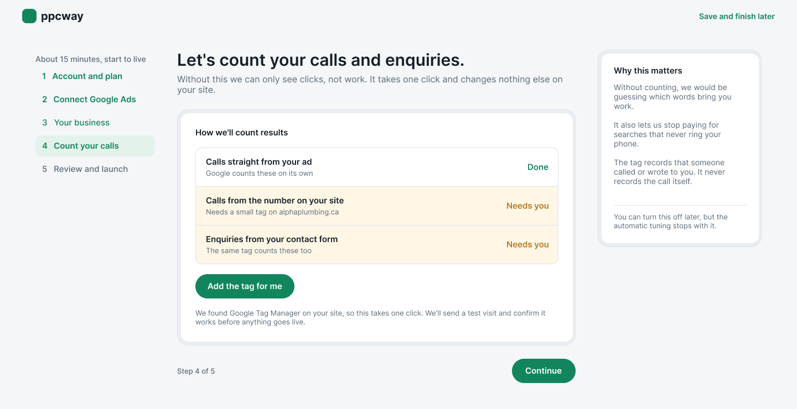
Without this, PPCWay can only see clicks, not work.
Three rows: calls straight from the ad (Google counts these itself), calls from the number on the website, and enquiries from the contact form. The last two need a small tag on the site, and one button offers to add it.
Step 11 of the journey, conversion tracking §4.4. The architecture document calls this "the single point of failure" for the whole idea §13.5: without it, PPCWay would be tuning ads toward clicks that may never ring the phone. So it is a gate. A real test visit has to be seen before launch, not just a tag that exists.
"Add the tag for me" uses Google Tag Manager, which the document prefers over pasting code by hand because pasted code breaks when a website is redesigned.
The Campaigns screen, shown inside the setup rail.
The same page as Campaigns above: the campaign in one sentence, the phrases, the ad, the checklist, and "Approve and launch".
Steps 9 and 12 §4.4. On approval the one door service sends the campaign to Google in a handful of batched calls, and the optimisation schedule starts from there.